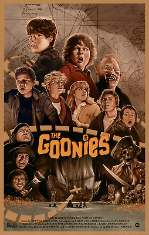

The Goonies
Goon Docks, Oregon. To make way for a new golf course, the entire community of the peaceful coastal town faces imminent foreclosure. But the game isn't over until the fat lady sings. When a band of local childhood friends calling themselves the Goonies stumble upon an old map, secret clues leading to the fabled treasure of notorious pirate One-Eyed Willy set in motion a wild mission to save their homes. With the criminal Fratelli family hot on their trail, a frantic race against time begins. Faced with Willy's complex booby traps, will the Goonies prove their mettle? But first things first. Is the mythical treasure real?